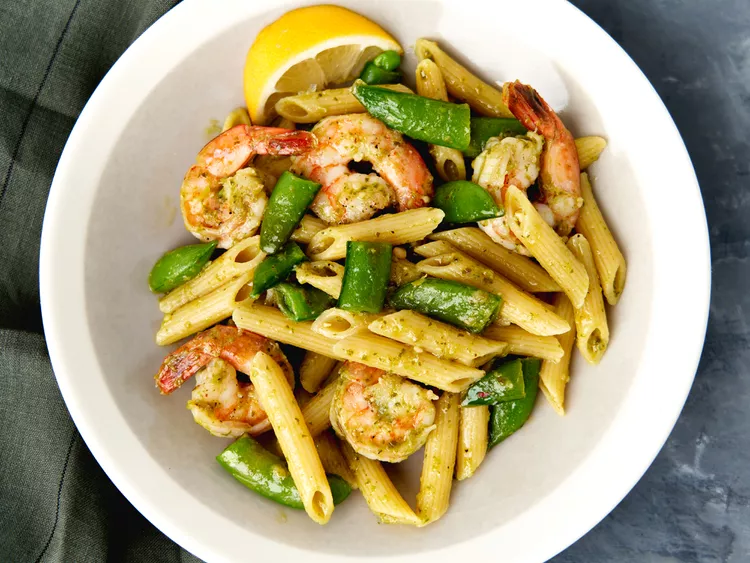

Shrimp Pesto Penne

Shrimp pesto penne takes just minutes to prepare—both shrimp and snap peas cook very quickly while
you boil the pasta, and the pesto is ready-made.
These are the ingredients:
- 12 ounces penne pasta
- 1 tablespoon olive oil
- 1 pound large shrimp, peeled and deveined (21 to 25 count)
- 1 (8 ounce) package sugar snap peas, cut into 1/2-inch pieces
- 1 (8 ounce) container refrigerated prepared pesto
- 1 lemon, zested and juiced
How to Make Shrimp Pesto Penne Step-By-Step:
- Bring a large pot of lightly salted water to a boil. Add penne and cook, stirring occasionally,
until tender yet firm to the bite, about 11 minutes. Reserve 1/2 cup of pasta water when draining; set aside.
- Meanwhile, heat oil in a large skillet over medium-high heat. Add shrimp and cook for 2 minutes, undisturbed.
Add in snap peas and stir until shrimp are just becoming opaque. Stir in pesto and cooked pasta until well combined.
- Add 1 teaspoon of lemon zest and the juice of the lemon to the pasta and toss to combine.
Add pasta water as needed to achieve desired consistency. Serve immediately.